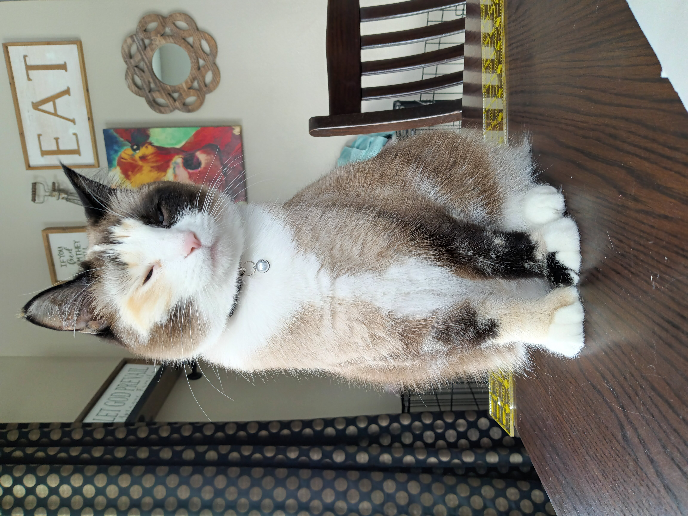
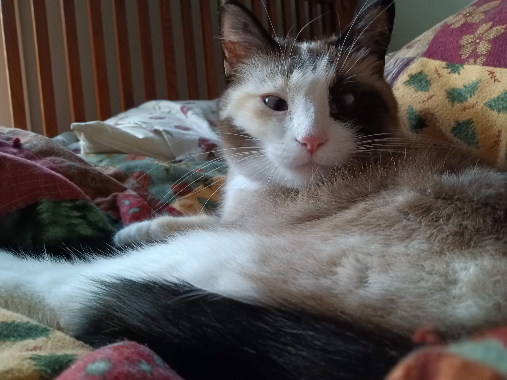

Welcome to My World!
Hi! I'm Mila - your new favorite internet cat.
I wasn’t always the pampered indoor queen you see today. I started my life as a feral kitten, roaming the wilds of rural Wyoming. Can you believe it? Out there among the sagebrush and coyotes, with nothing but my extra toes and pure determination to keep me going. Oh, did I forget to mention? I have six toes on each paw, that’s right, I’m what the humans call a polydactyl. I just call it fashion.
Luckily, I was rescued by a loving family who gave me a warm home, lots of toys, and all the attention I so obviously deserve. Now, I rule my domain (a.k.a. the house) with elegance, energy, and just a little bit of chaos.
A Few of My Favorite Things:
- My Family - My humans are my favorite, even when they tell me not to bite them (which I totally still do).
- Treats - If it crinkles, I’m coming.
- Hair Ties - Yes, your hair ties. I steal them. I stash them. I treasure them.
- Toys - Balls, strings, feathers, lasers… if it moves, it’s mine.
- Biting - It’s how I show love, okay?
- Bug Hunting - No pest survives in my kingdom.
- Sleeping - Preferably in a sunbeam or on top of laundry you just folded.
Life Inside
After my wild kitten days, I decided: outside? Not for me. I’ve seen enough of that dusty, windy wilderness. These days, I’m a full-time indoor cat, and let me tell you, climate control is fabulous. I have cozy hiding spots in the walls (don’t ask how I get in there), endless entertainment, and all the chin scritches a cat could want. But just because I stay inside doesn’t mean life is boring. I chase shadows, knock things off shelves, and occasionally dive-bomb the dog from the staircase. You know, the usual feline mischief.